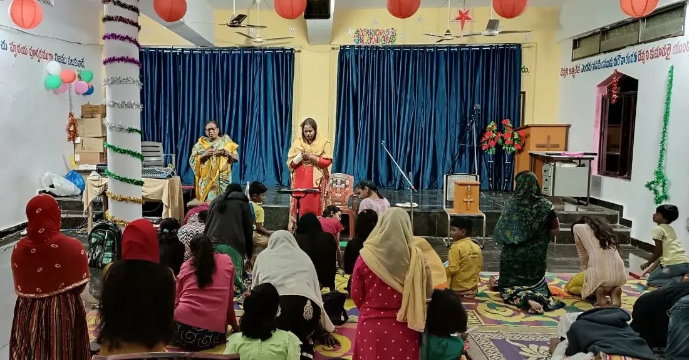
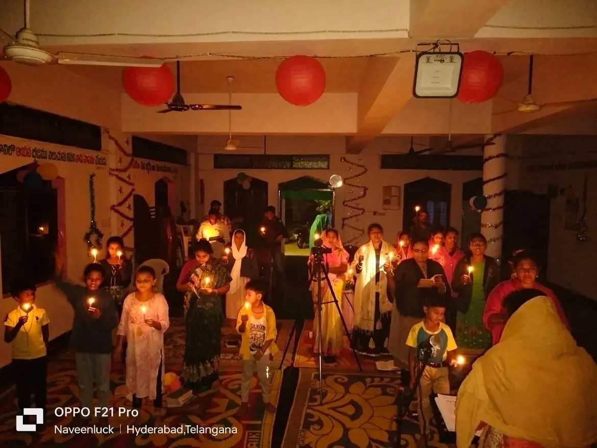
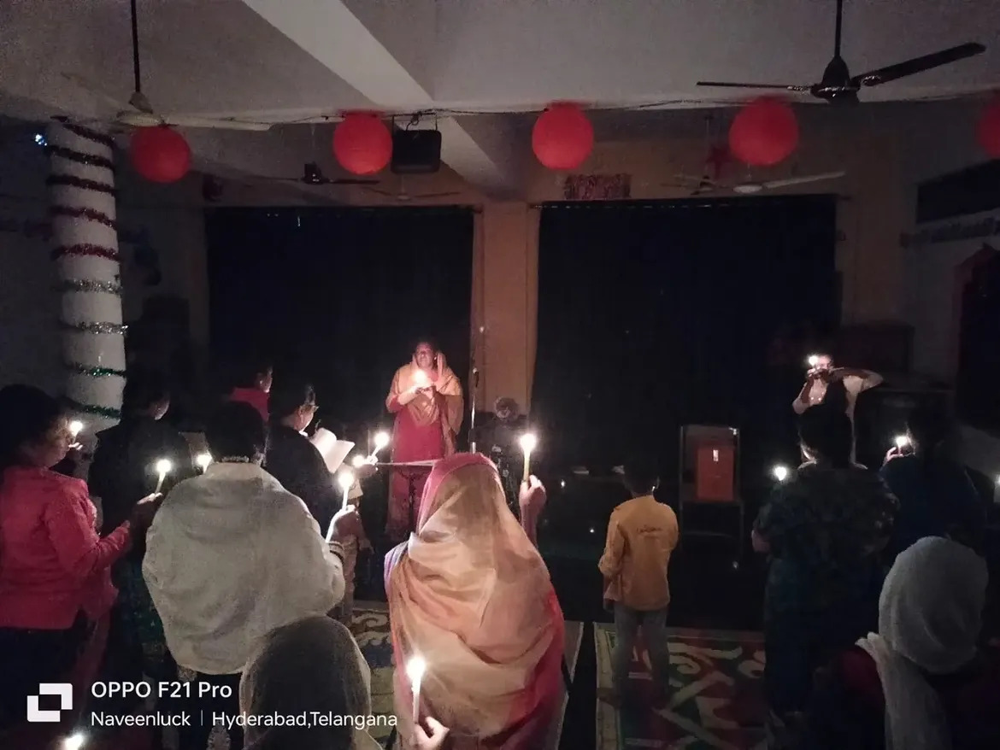

01 FAITH
FEATURED MESSAGE
Walking With Christ
A message about following Jesus and building a life rooted in His truth.
Discover biblical messages that strengthen faith, renew hearts, and draw us closer to Jesus Christ.
Explore SermonsWhether you are seeking encouragement, growing in faith, or learning more about God's Word, explore messages prepared to inspire your walk with Christ.
Find messages by topic or search for a particular teaching.

01 FAITHA message about following Jesus and building a life rooted in His truth.

02 PRAYERDiscover the importance of prayer and drawing near to God with a sincere heart.

03 HEALINGBe encouraged by the hope, compassion, and healing power of God.
Try another search term or choose a different topic.
More messages will be added to this library as they become available.
May every message lead us to know Christ more deeply and live according to His Word.
Colossians 3:16 Connect With Our Ministry →